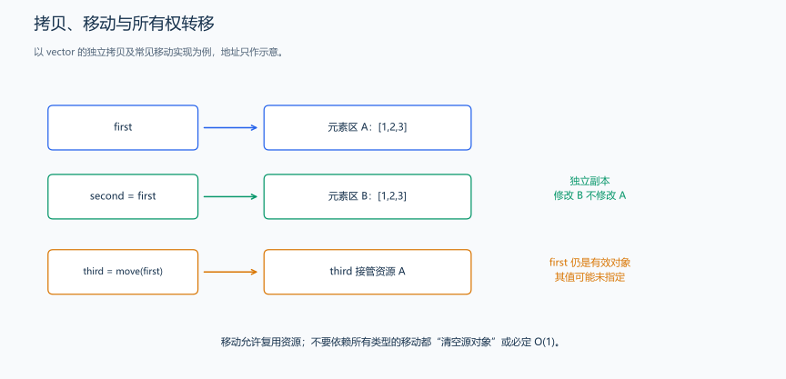

（七） 拷贝、移动与资源自动管理
已经能让对象随作用域销毁，接下来检查复制或转交拥有资源的对象时，数据与释放责任应落在哪一份对象上。
拷贝关注独立对象，移动关注资源转交。 对下面的 vector，拷贝后修改 second[0] 不会影响 first[0]，因为两个容器各自拥有元素。移动允许新对象接管资源；移动后的原容器仍能销毁、重新赋值，但在检查其当前状态之前，不能继续假定它还保留原来的三个元素。
如果类中直接拥有一个 new 得到的裸指针，而拷贝只是复制地址，两个对象可能都把同一地址当成自己的资源，析构时便会重复释放。使用 vector 保存数组，或用下面将说明的独占指针表达一个所有者，可以让成员类型处理相应生命周期。这就是零规则适合新手的原因：先选好资源成员，再尽量依赖编译器和成员的默认操作。

拷贝得到独立数据，移动则允许把已有资源交给另一个对象。移动后的原对象仍可销毁或重新赋值；图中的箭头表示资源转交，原容器是否为空取决于具体类型的移动行为。
<utility> 的 std::move 把对象转换成可参与移动操作的形式，实际转交由相应类型的移动操作完成。这里用它给 third 提供移动初始化的来源；它本身不执行元素搬运。
#include <utility>
#include <vector>
using namespace std;
vector<int> first{1, 2, 3};
vector<int> second = first; // 拷贝：两个 vector 各自管理元素
vector<int> third = std::move(first); // 移动：允许转移内部资源std::move 本身不搬运数据，它把表达式转换成可以参与移动的形式。真正的行为由移动构造函数或移动赋值决定。移动后的标准库对象通常仍有效，但状态未指定；不要直接假定 first 一定为空。
RAII（资源获取即初始化）把资源的生命周期交给对象管理：构造时取得资源，析构时释放资源。例如 vector 管理动态内存，文件流管理打开的文件，unique_ptr 管理独占对象。
从手工 delete 到自动释放： <memory> 提供 unique_ptr 等智能指针；unique_ptr<int> 是独占一个动态整数的类型，make_unique<int>(42) 创建该整数并返回它的所有者。对象退出作用域时自动释放所拥有的资源，移动会转交所有权；不能直接拷贝出两个独占所有者。
#include <iostream>
#include <memory>
#include <utility>
using namespace std;
int main() {
auto owner = make_unique<int>(42); // 创建整数与独占所有者，失败不会留下裸资源。
auto receiver = move(owner); // 转交所有权，unique_ptr 的来源明确变为空。
cout << (owner == nullptr) << ' ' << *receiver << '\n'; // 输出 1 42。
} // receiver 销毁时自动释放整数；不再手工 delete。这时可以把多态例子中的局部对象访问扩展为自动拥有动态图形：make_unique<Rectangle>(3,4) 创建具体图形，vector<unique_ptr<Shape>> 保存独占所有者。与仅存 Shape* 相比，现在容器销毁也会释放它拥有的图形；通过基类销毁派生对象仍要求正确的虚析构接口。
| 工具 | 所有权含义 | 常见用途 |
|---|---|---|
unique_ptr<T> |
一个所有者 | 独占动态对象；可移动，不可拷贝 |
shared_ptr<T> |
多个所有者 | 确实需要共享对象生命周期 |
weak_ptr<T> |
不增加共享所有者数量 | 观察共享对象，辅助避免循环引用 |
| 裸指针 / 引用 | 本身不表达自动释放责任 | 访问已有对象，需明确生命周期 |
如果类只使用 string、vector、智能指针等成员，通常可以依赖它们管理资源，这就是常说的零规则（Rule of Zero）。如果手工拥有裸指针资源，就需要认真设计析构、拷贝和移动，避免浅拷贝后重复释放。参见 C++ Core Guidelines：C.20。